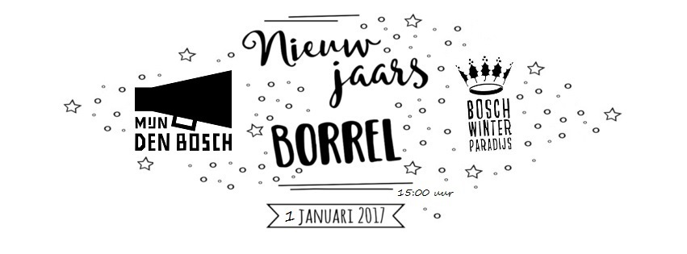
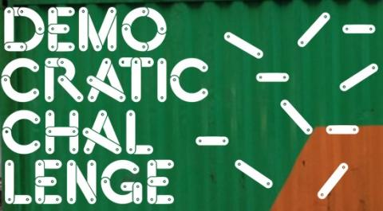
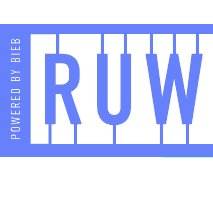

Laatste nieuws
Mijn Den Bosch op Bosch Winterparadijs
Dit jaar bezet ‘Mijn Den Bosch’ van 1 tot en met 8 januari het paviljoen van het Bosch Winterparadijs – de huiskamer van de stad aan de voet van de St. Jan. De eerste week van 2017 is dé tijd om na te denken over de toekomst. Over wat beter is voor de stad. Mijn Den Bosch verzamelt alle ideeën van bezoekers en biedt (netwerk)groepen de kans om samen te brainstormen over de toekomst van Den Bosch.
De voornemens voor en door de stad worden op nieuwjaardag op een inspirerende manier gedeeld. Vol humor, met muziek en improvisatie presenteren de cabaretiers van Flunknarf de ideeën die de bezoekers achterlaten. Het geheel wordt muzikaal omlijst door Power to the Pipo.
Maak van Den Bosch een echt paradijs: denk mee!
Van 1 tot en met 8 januari kun je als groep om 15:00 uur en 20:00 uur het paviljoen reserveren. De initiatiefnemers van Mijn Den Bosch nemen de presentatie en begeleiding op zich. Aanmelden is simpel: stuur een mail naar info@mijndenbosch.nl met de dag, het tijdstip en de grootte van de groep. Heb je nu al goede ideeën of de eerste week van januari geen tijd? Meld je aan via mijndenbosch.nl/aanmelden en organiseer zelf een bijeenkomst. Ook kun je daar individueel ideeën voor de toekomst aandragen en stemmen op de ideeën van anderen.

Democratic Challenge
Mijn Den Bosch is aangemeld als experiment bij het landelijke kennisprogramma Democratic Challenge. In heel Nederland wordt op lokaal niveau geëxperimenteerd met nieuwe vormen van democratie en initiatieven die de democratie vernieuwen. Want dat is nodig! In de rest van Nederland wacht men met spanning af hoe onze Bossche netwerkmethode zal gaan uitpakken. Als we erin slagen om stadsbreed na te denken over de toekomst van onze stad, dan wil heel Nederland daar meer van weten.
We krijgen advies en zitten in een peer-to-peer team met initiatiefnemers en progressieve wethouders, raadsleden en ambtenaren die met ons meedenken over hoe Mijn Den Bosch het beste een succes kan worden. Erg leerzaam!
Heb je ook tips of wil je meehelpen om Mijn Den Bosch tot een succes te maken? Mail even naar info@mijndenbosch.nl

De Officiële Kick-Off zit erop!
Na de lancering van de campagne, enkele pilots en de zomervakantie is Mijn Den Bosch nu echt van start gegaan! Om het goede voorbeeld en startsein te geven organiseerden we een kick-off meeting op woensdag 12 oktober, vanaf 19:30u bij RUW, waarvoor we ons eigen netwerk hebben uitgenodigd: sleutelfiguren die de meest uiteenlopende Bosschenaren kennen en volgens ons in staat zijn om hun netwerk te mobiliseren voor een gesprek over de toekomst.
Tijdens deze Kick-off gaven we een bondige presentatie en gingen we verschillende vormen verkennen om het gesprek over de toekomst te voeren! Deze ervaring kan iedereen meenemen naar het gesprek met de achterban. De resultaten staan nu hier op de site. De bijeenkomst werd gefilmd. Hier volgt een korte impressie:
Bouw aan de toekomst van jóuw Den Bosch!
Wil jij samen met jouw Bossche netwerk, club of ander initiatief júllie ideale toekomstplaatje van Den Bosch zichtbaar maken? Organiseer een burgeRmeester bijeenkomst en bouw de toekomst van jóuw stad. Meld je aan via het formulier door de 4 stappen te volgen en deel jullie mening met je stadsgenoten. Lukt het niet om je via de website aan te melden? Stuur dan een e-mail naar info@mijndenbosch.nl. Wij helpen je graag!
Website gelanceerd!
Welkom op de gloednieuwe website van Mijn Den Bosch, jouw Den Bosch dus! Er is de afgelopen weken hard aan gewerkt door bevlogen Bosschenaren. Snuffel maar lekker rond en bekijk de animatie die in één minuut uitlegt wat Mijn Den Bosch precies inhoudt. Gaan jouw vingers ook jeuken? Meld je aan met jouw netwerk en organiseer een BurgeRmeester bijeenkomst!